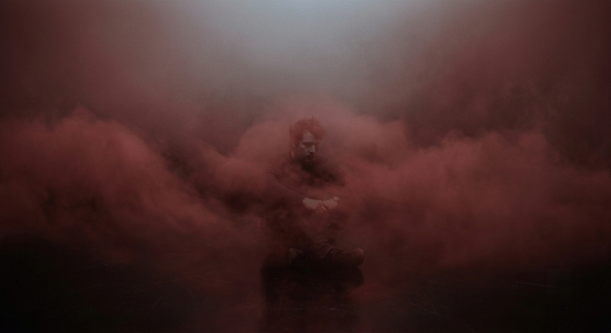

Una primera vez
La primera vez que bajé al infierno la oscuridad, el silencio y la tristeza se apoderaron de mí. Lentamente giraba sobre mí mismo con los brazos extendidos tratando de tocar algo, de ver algo, de oír algo. Pero nada afectaba a mis sentidos como lo hacía la profunda tristeza que me embargaba. No era desde luego aquél lugar como lo había imaginado ni, mucho menos, como me lo habían contado. Y rodeado de un infernal silencio, de una infernal oscuridad, me senté en el suelo, pues era la única referencia que podía encontrar. Mis manos palpaban el frío y liso suelo a mi alrededor mientras mis ojos seguían clavados en la oscuridad. Nada más que tristeza encontré. Tristeza, solamente eso.
"¿Qué has venido a buscar aquí?" tronó una voz en mi interior. Y en la triste oscuridad mis manos y mis ojos dejaron de buscar. En el triste silencio pensé: "busco respuestas". Pero no las hubo; sólo silencio, y tristeza, y oscuridad, y frío, y más y más tristeza... "¿Y cuáles son tus preguntas?" volví a escuchar en mi interior. Pero yo no sabía responder porque en aquélla oscuridad no tenía respuestas, porque en aquél silencio infernal no tenía preguntas.
La primera vez que bajé al infierno buscando respuestas lo hice sin llevar las preguntas. Y sólo encontré oscuridad, silencio y tristeza.